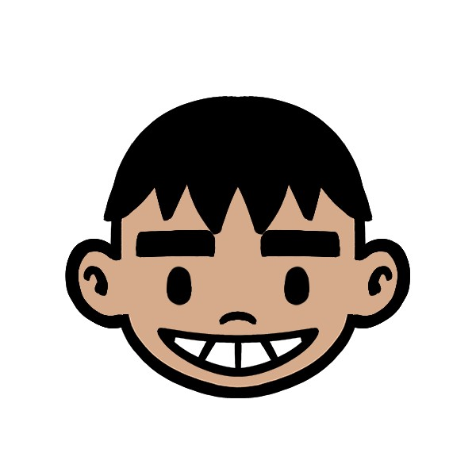
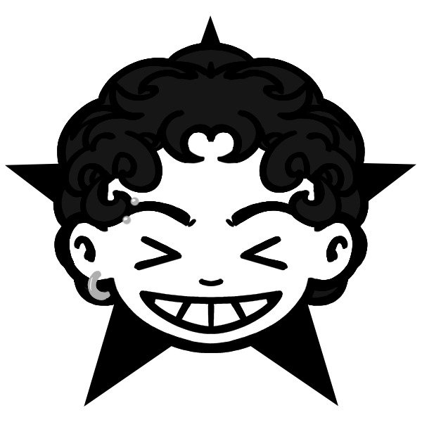

O estúdio
O estúdio de Lucca Lyra e Marcos Ribeiro. Os dois criam, os dois assinam e nada é terceirizado.
O começo
Antes do estúdio, já existia a dupla: Lucca no design e na direção de arte, Marcos na criação e na produção. Os trabalhos avulsos para páginas de futebol se tornaram clientes fixos.
A virada
Com o Samengo, nosso trabalho passou a alcançar milhões de pessoas todos os meses, e o mídia kit que criamos se tornou a principal ferramenta comercial da página.
A consolidação
O trabalho editorial nos levou ao jurídico, com o Consultor Jurídico e o Anuário da Justiça. Em seguida vieram restaurantes e bebidas, e as três áreas se consolidaram.
Hoje
Hoje também desenvolvemos interfaces e sites com IA no processo. Entregamos peças estáticas, motion, apresentações, marca e web.

Co-fundador · Vídeo & Vibecode
Responsável pela parte em movimento: edição, After Effects, motion para redes sociais e transmissões, além dos protótipos e sites feitos com vibecode.

Co-fundador · Ilustrador & Designer
Responsável pela parte visual estática: ilustração, posts, capas e identidade visual. O traço do Anuário da Justiça e do Samengo é dele.
Na prática, os dois fazem de tudo. A divisão acima apenas mostra onde cada um se destaca.
Futebol, jurídico e gastronomia. Conhecemos o público de cada área e sabemos quais clichês evitar.
Você fala diretamente com quem cria, e os ajustes costumam sair no mesmo dia.
Tudo faz parte do mesmo sistema. Por isso o post de terça combina com a capa de dezembro.
Usamos IA para ganhar tempo na produção e nos protótipos. A decisão de design é sempre nossa.
Vamos trabalhar juntos?